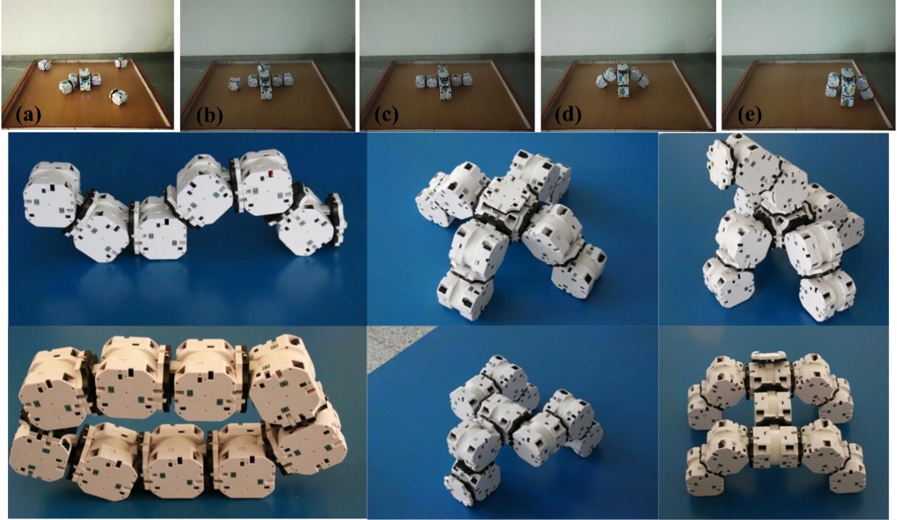
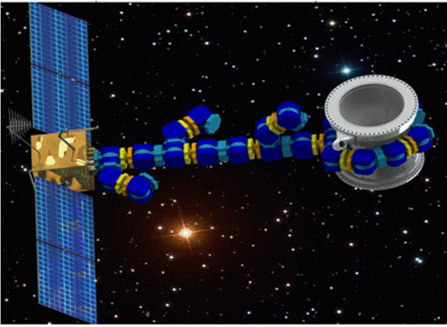

Self-assembling modular robot and self-reconguring
自组装模块化和空间自重构机器人

图1 蛇形自组装模块化机器人

图2 多关节模块化自组装机器人

图3 空间自重构机器人
蛇形自组装模块化机器人
蛇形自组装模块化机器人。面向模块化机器人自组装构型构建的需求，解决了机器人模块化构型优化、自主对接控制、任务自适应 控制等难点，设计了可移动对接的自组装模块化机器人，提出了基于多传感器的目标定位与对接控制方法，实现不同方位、不同层 级的对接，构建了复杂地形下的任务自适应路径优化方法，研制了样机，搭建了实验系统，开展了对接、运动与自组装等实验，验 证了机器人形态结构的组装与扩展能力。
多关节模块化自组装机器人
设计开发了全功能的自组装移动模块化机器人，多个机器人模块可实现二维平面的自主交汇对接 ，构成不同形态，研究了多机器人动力学模型，实现进化控制，可在未知环境下进行多模式自适应运动。
空间自重构机器人
针对非合作目标操控的非结构化、未知性问题，研制了自重构模块化机器人，实现目标协同抓取与操作。